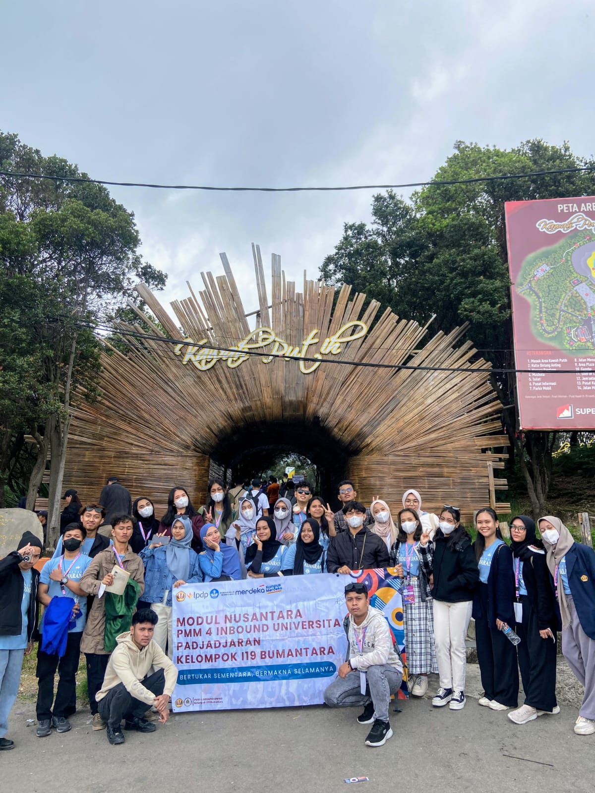
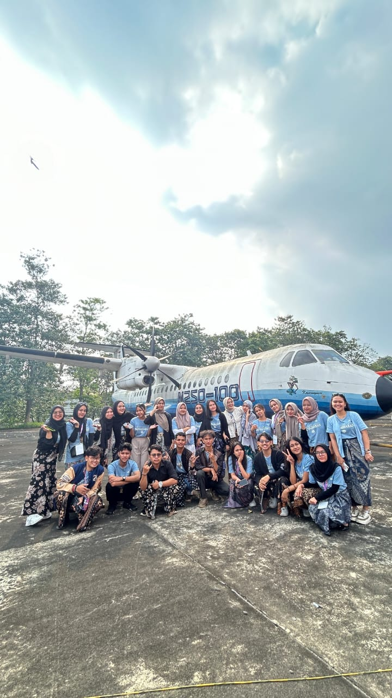
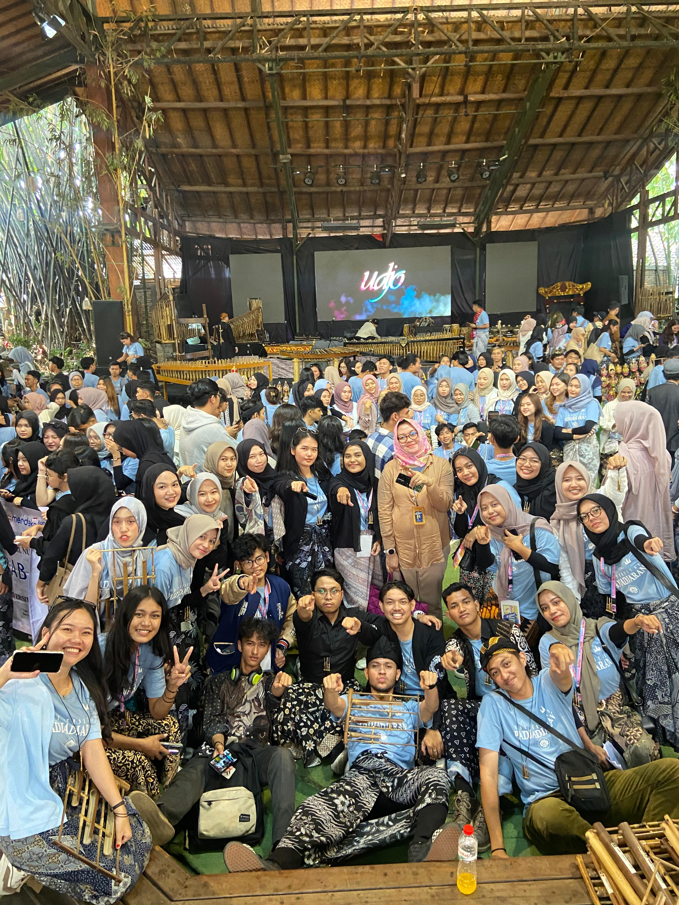

Destinasi Wisata Modul Nusantara
Modul Nusantara adalah bagian dari Program Mobilitas Mahasiswa (PMM) yang merupakan inisiatif pemerintah Indonesia melalui Kemendikbudristek. Tujuan utama dari Modul Nusantara adalah untuk memperkenalkan dan memperkuat wawasan kebhinekaan, budaya lokal, dan nilai-nilai kebangsaan kepada mahasiswa Indonesia. Melalui Modul Nusantara, mahasiswa tidak hanya mendapatkan ilmu dan pengalaman baru, tetapi juga menjadi agen perubahan yang memperkuat persatuan di tengah keberagaman budaya Indonesia.Berikut adalah beberapa tempat menarik yang menjadi bagian dari Modul Nusantara:
1. Tangkuban Perahu

Tangkuban Perahu adalah salah satu destinasi wisata alam yang terkenal di Jawa Barat, Indonesia. Gunung ini terletak sekitar 30 km di utara Kota Bandung, tepatnya di kawasan Lembang. Tangkuban Perahu dikenal karena bentuk gunungnya yang unik menyerupai perahu terbalik, yang menjadi inspirasi dari legenda rakyat Sunda, yaitu Sangkuriang.Legenda ini mengisahkan tentang seorang pemuda, Sangkuriang, yang tanpa sadar jatuh cinta pada ibunya sendiri, Dayang Sumbi. Ketika Sangkuriang mengetahui kebenarannya, ia merasa marah dan menendang perahu besar yang sedang dibuat, sehingga perahu tersebut terbalik dan menjadi Gunung Tangkuban Perahu.
2. Kawah Putih
Kawah Putih adalah destinasi wisata alam yang terkenal di kawasan Ciwidey, sekitar 50 km di selatan Kota Bandung, Jawa Barat. Kawah ini merupakan kawah vulkanik dari Gunung Patuha yang memiliki daya tarik utama berupa danau berwarna putih kehijauan yang memikat, serta suasana mistis yang unik akibat kabut tipis yang sering menyelimuti kawasannya.Kawah Putih merupakan salah satu destinasi wajib di Bandung bagi pencinta alam dan fotografi. Kombinasi warna air yang magis, udara sejuk, dan pemandangan menawan menjadikannya salah satu tempat wisata terbaik di Jawa Barat.
3. PT Dirgantara Indonesia
PT Dirgantara Indonesia (PTDI) adalah perusahaan industri pesawat terbang yang terletak di Bandung, Jawa Barat. Sebagai salah satu kebanggaan Indonesia di bidang teknologi, PTDI berfokus pada pengembangan, manufaktur, dan perawatan pesawat terbang untuk berbagai kebutuhan, termasuk militer, komersial, dan sipil.PT Dirgantara Indonesia didirikan pada tahun 1976 dengan nama IPTN (Industri Pesawat Terbang Nusantara), PTDI merupakan inisiatif besar dari pemerintah Indonesia untuk membangun kemandirian di bidang teknologi penerbangan. Pada tahun 2000, perusahaan ini berganti nama menjadi PT Dirgantara Indonesia (Persero).PTDI telah bekerja sama dengan berbagai perusahaan penerbangan internasional, seperti Airbus, Bell Helicopter, dan CASA, yang berkontribusi pada keahliannya dalam mendesain dan memproduksi pesawat.
4. Saung Angklung Udjo
Saung Angklung Udjo didirikan pada tahun 1966 oleh Udjo Ngalagena dan istrinya, Uum Sumiati, dengan tujuan melestarikan seni dan budaya Sunda. Tempat ini menjadi simbol dedikasi mereka untuk mengenalkan angklung dan seni tradisional lainnya ke generasi muda, serta masyarakat global.Angklung sendiri adalah alat musik tradisional yang terbuat dari bambu dan menghasilkan suara khas saat digoyangkan. UNESCO telah menetapkan angklung sebagai Warisan Budaya Tak Benda Dunia pada tahun 2010.
Kembali ke Halaman Utama